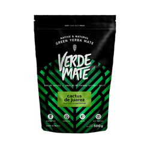
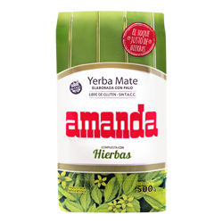
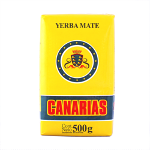
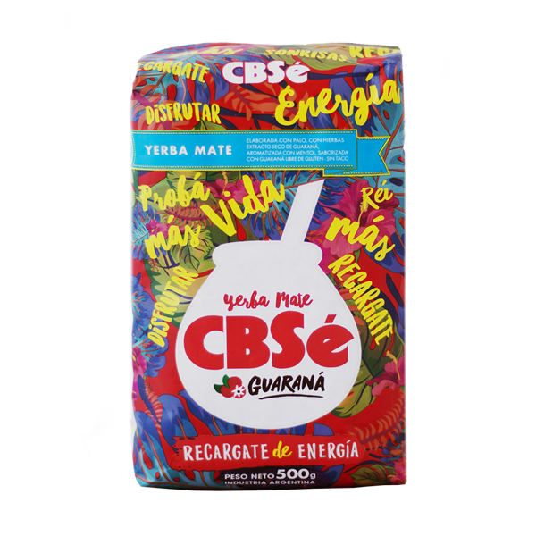
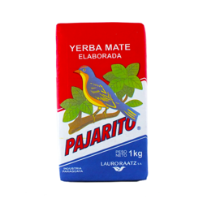

Yerba Mate to napój przyrządzany z listków i gałązek Ostrokrzewu paragwajskiego (Ilex paraguariensis, St.Hillaire). Jest to wiecznie zielone drzewo, osiągające w stanie dzikim nawet do 15 m wysokości. Występuje jedynie na niewielkim obszarze pomiędzy Oceanem Atlantyckim, a rzeką Paraguay, na terenie Argentyny, Paragwaju, Brazylii i Urugwaju. Również w tych krajach jest uprawiany i eksportowany na cały świat.
Swoją popularność Yerba Mate zawdzięcza niezwykłym właściwościom pobudzającym, wzmacniającym, oczyszczającym. Ma bardzo bogaty skład, dzięki czemu również spektrum działania jest bardzo szerokie. Ale po kolei.





Yerby marki Verde Mate to jedne z najchętniej wybieranych suszy. Charakteryzują się one aromatycznym i delikatnym smakiem, a jej bezpyłowa struktura zadowoli nawet największych mateistów. Cechą charakterystyczną producenta yerby Verde Mate, dostępnej na ZielonyTarg.pl są świeże, zielone listki, bez patyczków i nadmiernego pyłu. Taki efekt uzyskuje się dzięki specjalnej obróbce ostrokrzewu. Poza tym, że są one dokładnie cięte, to nie poddaje się ich procesowi palenia czy wędzenia. Są suszone czystym, gorącym powietrzem. Dzięki temu, produkty Verde Mate zachowują bogactwo aromatów, rewelacyjny zapach a także piękny kolor.
Klasyczna argentyńska Yerba Mate Amanda o delikatnym aromacie i łagodnym, słodkawym smaku. Składa się głównie z listków i gałązek, jest też bardzo mało pylista. Doskonale nadaje się jako uzupełnienie codziennej diety ze względu na swoje raczej umiarkowane właściwości pobudzające. Tradycyjna Yerba Mate Amanda pochodzi z osławionej plantacji La Cachuera ze słynnej prowincji Misiones. Co ciekawe została ona założona przez polskich emigrantów - rodzinę Szychowskich. Obecnie ta pochodząca z argentyny Mate Amanda jest jedną z najpopularniejszych marek Yerby w tym kraju!
Canarias to tradycyjna, brazylijska erva pakowana w Urugwaju. Zawiera listki oraz niewielką, bo tylko 1,5% ilość patyczków. Canarias to yerba mate o bardzo wyraźnym smaku, jest niezwykle mocna z wyczuwalną, słodkawą nutą. Ten rodzaj ervy (brazylijska nazwa yerby) ma silnie pobudzające działanie, jest świetną alternatywą dla kawy, przeważając nad kawą odczuciem orzeźwienia, doskonałym gaszeniem pragnienia oraz korzyściami płynącymi z zachowania magnezu w organizmie. Canarias jest popularna w Urugwaju, gdzie około 60% ludności korzysta z jej właściwości.
CBSe Energia Guarana to energetyczna mieszanka yerba mate z guaraną, po którą sięgają osoby szukające pobudzających naparów o delikatnym smaku. Pozycja CBSe Energia Guarana od argentyńskiego producenta CBSe to przede wszystkim świetnej jakości susz yerba mate. Żyzne ziemie w dolinie San Juan obfitują urodzajnymi plonami, a susz zebrany z tej plantacji ma znakomite właściwości. Oprócz ostrokrzewu paragwajskiego w CBSe Energia Guarana znaleźć można dodatki takie jak: mięta, werbenę cytrynową, oraz oczywiście olejek z guarany.
Yerba mate Pajarito Elaborada to klasyka z Paragwaju. Pajarito oznacza po hiszpańsku „ptaszek” i na nazwie kończy się delikatności. Mocna w działaniu i wyraźna w smaku. Tu nie ma miejsca na subtelności - to jest mate w stylu macho. Wielu mateistów mówiąc yerba, myśli właśnie Elaborada od Pajarito. Być może dlatego, że kto jej spróbował, ten długo pamięta wyjątkowo przyjemny smak.